Glenstrup
Ziemlich feinkörniger, graublauer Granit mit zahlreichen roten Flecken
Höhe: 121 cm
Breite: 54 cm
Dicke: 39 cm
Runenhöhe: 10 - 14,5 cm
Runeninschrift :
Toke setzte diesen Stein für seinen Vater Uflå, ein sehr wohlgeborener Thegn.

43 - Glenstrup 2 (auch Handest Stein) - Letztes Update 09.09.2025
Listennummer : DR 123 / DK MJy 49
| Navidaten: 56.58411 9.85126 oder: Glenstrup Søvej 34, 8990 Fårup |
Transliteration:
Seite A: tuki : sati : stin : þąnsi : iftiR : ufla : faþur : sin : harþa : ku
Seite B: þan : þign :
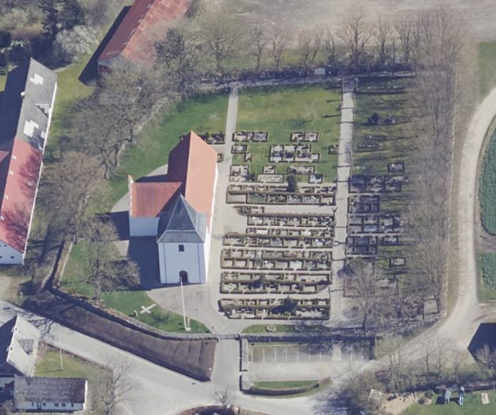
Das ist ein Luftfoto vom 17.04.2023 von Skråfoto - Lizenz: CC BY 4.0 - das die Kirche von Glenstrup zeigt, in deren Vorraum der Runenstein steht. Skråfoto ist eine Webanwendung, die von Klimadatastyrelsen weltweit kostenlos bereitgestellt wird. Die Aufnahmen werden seit 2017 alle zwei Jahre erneuert und neben einer Senkrechtaufnahme wird ein Schrägbild aus jeder Himmelsrichtung angeboten, das man über eine Adresssuche aufrufen kann.
Dieser Runenstein befand sich früher als Grund- und Eckstein in der südwestlichen Ecke der sogenannten "Verlassenen Kirche" von Handest, die seit Beginn des 16. Jahrhunderts nicht mehr benutzt wurde. In der Mitte des 19. Jahrhunderts standen deren Fundamente noch, aber viele Mauerquader waren für den Bau einer Steinbrücke am Landweg Hobro - Randers weggenommen worden.
Im Jahre 1855 wurde der Runenstein von einem Gutsbesitzer entdeckt und als Eckstein in einem Torfhaus auf seinem Gut verwendet. Hier wurde er 1877 von dem damaligen Besitzer Peder Brun und dem Schullehrer Christensen wiederentdeckt. Herr Brun wollte ihn herausnehmen und auf einen Sockel stellen lassen. Es blieb allerdings bei einer unverwirklichten Idee, da er 1880 verstarb. Einige Zeit später überließ die Witwe den Stein jedoch auf Geheiß des altnordischen Museums in Kopenhagen dem Schullehrer Dystrup aus Gassum (zwischen Hobro und Randers), der ihn herausnehmen und das Loch instand setzen sollte. Auf dessen Initiative wurde er 1881 herausgenommen und dem Nationalmuseum geschenkt. Dorthin gelangte er jedoch nicht. Er lag eine Zeitlang beim Hof, wo ihn noch Prof. Ludv. F. A. Wimmer (*07.02.1839 - 29.04.1920, Philologe und Runenforscher - link-LIVES - Politiets registerblade - Bestattungsprotokoll)
 Bildquelle:
Fotografie zw. 1877-1900 von Fotograf Hansen & Weller
-
Det Kgl. Biblioteks billedsamling - Lizenz:
Public Domain
Bildquelle:
Fotografie zw. 1877-1900 von Fotograf Hansen & Weller
-
Det Kgl. Biblioteks billedsamling - Lizenz:
Public Domain
bei seinem Studienbesuch vorfand. Er wurde später am Landweg aufgestellt, bevor er 1890 nach Glenstrup gebracht und im Waffenhaus der Kirche aufgestellt wurde. Inzwischen wurde er in der linken Ecke im Waffenhaus mit einem ausreichenden Abstand zur Wand neu eingelassen, so dass man auch die Rückseite, auf der sich die eingeritzte Darstellung von einem Hirsch und einer Hirschkuh (siehe unten), deren Bedeutung ungewiss ist, problemlos anschauen kann.
Der Runenstein wird in die Zeit von 970 - 1020 datiert. Die Inschrift verläuft auf der vorderen Breitseite im Bogen von links unten nach rechts unten. Auf der schmalen Inschriftseite wird sind von unten nach oben gelesen beendet.
Die Kirche ist täglich zwischen 08.00 und 16.00 Uhr geöffnet (ohne Gewähr!).
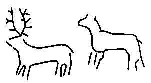
Erstmals war ich im Sommer 1984 in der Kirche von Glenstrup, um diesen Runenstein zu besichtigen. Danach kam ich am Dienstag, 21.08.1990, nochmals am Sonntag, 02.07.2000, und zuletzt am Dienstag, 14.06.2022, vorbei. Bei meinem letzten Besuch - Jütland Wikinger-Tour 2022 / Dienstag, 14.06.2022 - habe ich die diese Fotografien gefertigt.
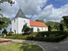 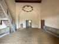 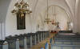 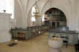 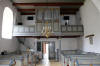 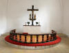


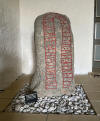 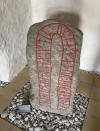 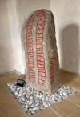 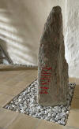 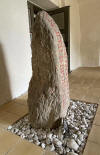 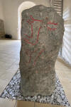 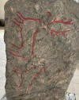 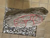


Was mir bei diesem neuerlichen Besuch im Kircheninnern direkt auffiel war das Wikingerschiff - ein Knarr, also ein Lastschiff - das als "Kirchenschiff" zuvor nicht da war. Über den ausliegenden Flyer konnte ich dann nachlesen, dass der Kirchengemeinderat im Jahr 2017 ein kostenloses Angebot für dieses Schiff von dessen Baumeister, Herrn Zimmermann Steen Zoffmann, erhielt, zu dem man nicht Nein sagen konnte. Der damals 74-Jährige hat seit seinem Ruhestand inzwischen in seiner Hobbywerkstatt, der alten Schmiede von 1792 in Ørum bei Vejle, inzwischen sieben Schiffe gebaut, die in Kirchen über das ganze Land verteilt zu finden sind. Wie es bei Kirchenschiffen Tradition ist, verschenkt Steen Zoffmann seine Modellschiffe an die Kirchen.
Außerdem wird in dem Kirchen-Flyer noch angemerkt, dass man 1896 bei der Restaurierung der Kirche eine Kalkmalerei / Zeichnung von einem Schiff entdeckt hat, vielleicht ein Knarr! Da es damals als nicht erhaltungswürdig erachtet worden war, wurde es leider übertüncht.
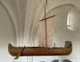 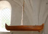 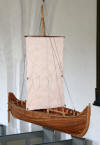


Der Baubeginn war am 28. November 2017.
Bei meinem Besuch am Freitag, 26.08.2016, war die Kirche offen und ich konnte feststellen, dass die Inschrift sowie die Tierritzung auf der Rückseite seit meinen letzten Fotos vom 02.07.2000 (siehe links) - aber auch seit denen des NM aus 3/2012 - mit roter Farbe ausgemalt worden waren. Dies kommt der Erkennbarkeit der Inschrift natürlich enorm zu Gute. Andererseits wundert mich dies, da mir bekannt ist, dass bei anderen Runensteinen die aufgebrachte Ausmalung nur mit weißer Kreide auf Geheiß des Nationalmuseums wieder entfernt werden musste. Bei der Durchsicht meiner Unterlagen fand ich gerade (13.10.2021) in einem neueren Prospekt der Kirche den Eintrag, wonach die rote Ausmalung der Runenzeichen vom Konservator des Nationalmuseums in 2015 vorgenommen wurde. Aha, Fall geklärt! Aber warum macht man es dann nicht mit den vielen anderen Runensteinen in dänischen Kirchen ebenso?
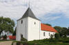 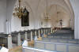 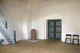 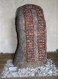 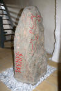 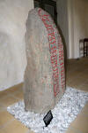 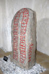 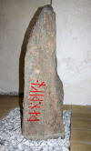 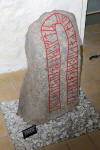 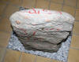 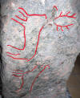


Laut Danmarks Runeindskrifter, Jacobsen/Moltke, 1942, wird dieser Runenstein erstmals in dem Runenwerk von Prof. P. G. Thorsen (*07.08.1811 - 06.05.1883, Bibliothekar, Runenforscher und Historiker - link-LIVES - Artikel: Levnedsbeskrivelser af de ved Københavns Universitets Firehundredaarsfest promoverede Doktorer, Illustreret Tidende 1882, Nr. 1235 - vom 27.05.1833 / Grabstein in Varde / Eheschließung in Varde am 19. August 1848)
 Fotografie
zw. 1863-1900 von
Fotograf Budtz Müller (*26.12.1837 -
30.12.1884) -
Det Kgl. Biblioteks billedsamling - Lizenz:
Public Domain
Fotografie
zw. 1863-1900 von
Fotograf Budtz Müller (*26.12.1837 -
30.12.1884) -
Det Kgl. Biblioteks billedsamling - Lizenz:
Public Domain
De danske runemindesmærker beskrevne og forklarede, anden Afdeling, Jyllands Runemindesmærker, I. Afbildninger, 1879 - Nr. 73 mit der Bezeichnung "Hannest-Stein" ohne Abbildung aufgeführt. Allerdings kennt Thorsen komischerweise nur die B-Seite und führt deren Runenzeichen nur in Runenzeichen an. Dazu ergänzt er nur kurz: "Bruchstück, Nähe Hobro".
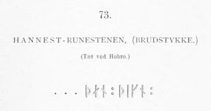
In seinem 1880 erschienenen Band II - De danske runemindesmærker beskrevne og forklarede, anden Afdeling, Jyllands Runemindesmærker, II. Text, 1880 macht er auf der S. 179 kurze Ausführungen zu dem 1877 gefundenen Runenstein und führt an, dass er umgehend vom Lehrer und Organist P. Hammershøy über die Entdeckung unterrichtet worden sei. Da hatte er wohl selbst keine Zeit mehr für ordentliche Studien vor Ort, bevor sein Band II erschien.
In dem Runenwerk von Prof. Ludv. F. A. Wimmer (*07.02.1839 - 29.04.1920, Philologe und Runenforscher - link-LIVES - Politiets registerblade - Bestattungsprotokoll)
Bildquelle:
Fotografie zw. 1877-1900 von Fotograf Hansen & Weller
-
Det Kgl. Biblioteks billedsamling - Lizenz:
Public Domain
De danske runemindesmærker undersøgte og tolkede af Ludv. F. A. Wimmer, Andet Bind, Runestenene i Jylland og på øerne. 1899-1901 - Nr. 52, S. 241 ff. wird er mit "Handest-Stein" bezeichnet.
Darin sind nun Zeichnungen aller 3 beschrifteten Seiten von Prof. Julius Magnus Petersen (*04.09.1827 - 31.01.1917, Archäologischer Zeichner und Restaurator - link-LIVES - Bestattungsprotokoll)
 Bildquelle: Fotografie
von 1903 von Fotograf Marius Christensen
(*24.06.1874 -
25.06.1907) -
Det Kgl. Biblioteks billedsamling - Lizenz:
Public Domain
Bildquelle: Fotografie
von 1903 von Fotograf Marius Christensen
(*24.06.1874 -
25.06.1907) -
Det Kgl. Biblioteks billedsamling - Lizenz:
Public Domain
aufgenommen, die ich hier wiedergeben möchte (Eigener Scan aus der in meinem Besitz befindlichen Ausgabe):
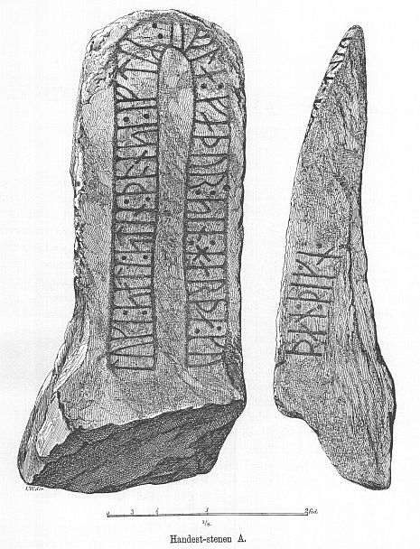
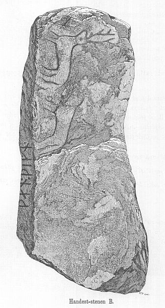
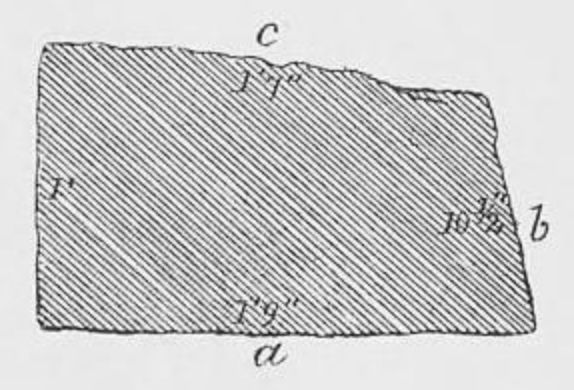
Wimmer hat den Runenstein persönlich vor Ort am 20./21. August 1882 untersucht und darüber diese Zeichnungen auch noch leicht überarbeitet.
Ludv. F. A. Wimmer hat seine jahrelangen Aufzeichnungen der "Kgl. Bibliotek" in Kopenhagen überlassen. Ein Verzeichnis darüber wurde 1915 in Buchform herausgegeben - "Collectio runologica Wimmeriana: Fortegnelse over Ludv. F. A. Wimmers runologiske o. a. Samlinger i Det kgl. Bibliotek"
In seinen Unterlagen in der Königlichen Bibliothek befinden sich in "III - Originaltegninger af de danske Runemindesmærker, udførte paa Undersøgelsesrejserne af Magn. Petersen og kontrollerede paa Stedet af Ludv. Wimmer, samt Prøvetryk af de paa Grundlag af de nævnte Tegninger, Aftryk o. s. v. til De danske Runemindesmærker" udførte Afbildninger med Wimmers Rettelser" unter der Nummer 63 zum Runenstein von "Handest"


diese beiden Zeichnungen von Magnus Petersen (*04.09.1827 - 01.02.1917, Archäologischer Zeichner und Restaurator), die er auf Juli 1882, bzw. auf den 21.07.1882 datiert hat.


Diese sw Fotos hat Erik Moltke (*04.04.1901 - 19.10.1984, Runologe, Historiker - link-LIVES)
 Bildquelle: Scan von Buchumschlag "Runerne i Danmark og ders
oprindelse" - Erik Moltke - 1976 - Lizenz:
CC-BY-SA
Bildquelle: Scan von Buchumschlag "Runerne i Danmark og ders
oprindelse" - Erik Moltke - 1976 - Lizenz:
CC-BY-SA
am 28.07.1930 aufgenommen.
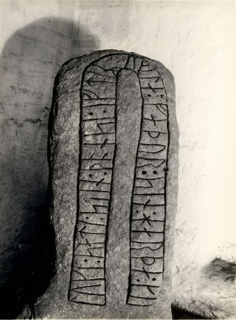
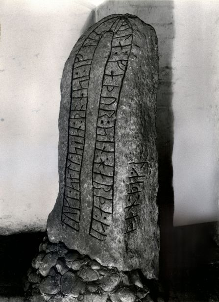
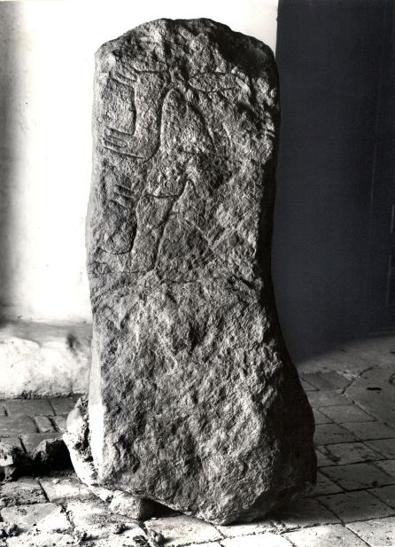
Quelle: Digitale Sammlung Nationalmuseum Kopenhagen - Lizenz: CC-BY-SA
Im Vorfeld zu dem 2016 erschienenen Buch von Lisbeth M. Imer (*1973, Runologin am Nationalmuseum Kopenhagen) "Danmarks Runesten - en fortælling" reiste sie mit dem Fotografen Roberto Fortuna zur Bestandsaufnahme durch die Lande. Dieser hat die Runensteine mit Schräglicht aufgenommen und darüber wirklich herausragende Fotos erzielt. Diese Fotografien stammen vom 21.03.2012.
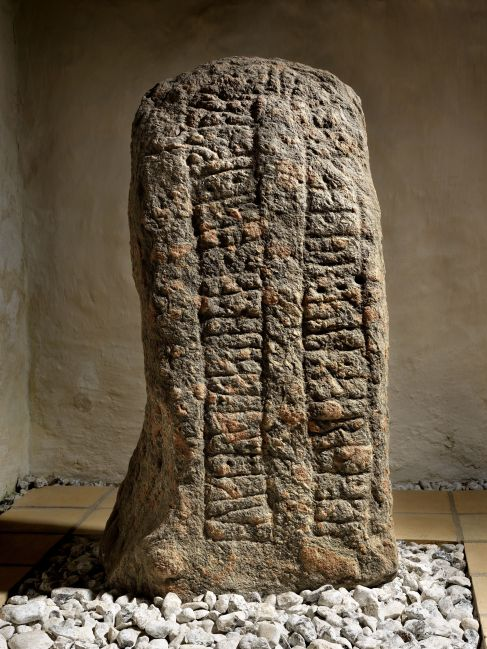
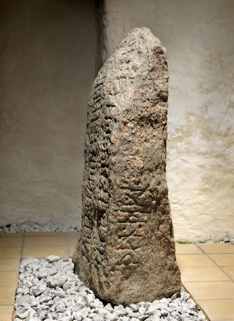
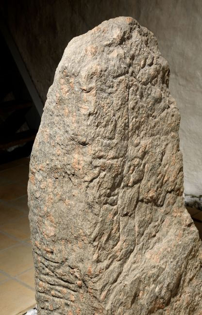
Quelle: Digitale Sammlung Nationalmuseum Kopenhagen - Lizenz: CC-BY-SA
Den Eintrag zu diesem Runenstein aus der dänischen Runen Datenbank im Internet kann man hier abrufen.
Die Informationen in "Fund og Fortidsminder" zu dem Runenstein finden sich hier. Darin ist inzwischen dieser Zustandsbericht des Steinrestaurators Leif Vognsen aus dem Jahr 2018 eingebettet.
Über diesen Link finden sich zu dem Runenstein Informationen des Forschungsprojektes "Runes" der Akademie der Wissenschaften zu Göttingen.
Der Runenstein Glenstrup 1 findet sich in der Runensteinsammlung des Nationalmuseum in Kopenhagen.
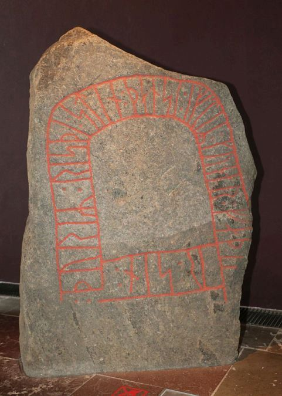